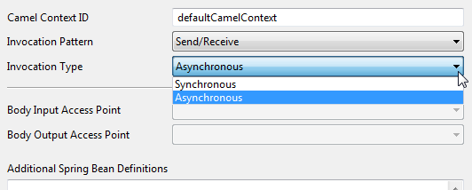
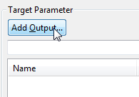

Figure: Camel Producer Application Properties Page
Camel Consumer and Producer applications allow you to specify arbitrary Camel Routes to be invoked from activities in Process Models at runtime and ensure connectivity via simple XML configurations leveraging the connectivity capabilities of Apache Camel.
To create a Camel Consumer application:
Figure: Create a Camel Consumer Application
Figure: Camel Consumer Application
To create a Camel Producer application:
Figure: Create a Camel Producer Application
Figure: Camel Producer Application
Double-click the application symbol to open the properties page. Select General Tab to open the Camel specific properties section.
Figure: Camel Producer Application Properties Page
In the General Tab section, you can set properties for the following:
The CamelContextID defines the ID of the CamelContext object, which represents the Camel runtime system.
In the Invocation Pattern drop-down list you may specify the invocation pattern.
Figure: Set Invocation Pattern
A Camel application can follow the invocation pattern of the following types depending if it is a Consumer or Producer application:
Note that a Consumer application changes to type Producer in case this option is selected.
In case you choose the Send/Receive option, you can select between the following invocation types:
Note that a Consumer application changes to type Producer in case this option and type is selected.
Note that the application changes to type Producer/Consumer in case this type is selected. The Consumer route contains the logic that will retrieve the result and completes the activity.

Figure: Select the type of invocation
Note that a Producer application changes to type Consumer in case this option is selected.
The Body Input Access Point and Body Output Access Point define the data values for the body of the exchange. All other access points defined in the Typed Access Points section will be set to the header of the exchange.
Figure: Selecting an Body Input Access Points
In the drop-down list all access point, which were defined in the Typed Access Points section for input and output respectively, are available for selection.
Figure: Body Access Points
You may use references to Spring Beans in your routes. These Spring Beans are either expected to be defined externally in your runtime environment or can be defined in the Additional Spring Bean Definitions text area:
Figure: Spring Bean Definition
Hereby, the byte code of com.siriussuper.order.OrderCache
is expected to be available in your runtime deployment, e.g. by adding a
Utility JAR file with this byte code to your Solution Release.
All routes based on a Camel application type definition are created and started at application startup by the Spring bean. Routes get stopped and recreated after each model deployment even if a process model is overridden. If a model is deleted from the Audit Trail database, all routes based on a Camel application type defined for this process model will be stopped and removed from the Camel Context.
In the Producer Route section you can define arbitrary Camel Routes to be invoked from activities in the Process Model at runtime, like:
Figure: Simple Route example
or more complex cases like
Figure: Complex Route example
In all cases, you need to ensure that the Camel Components used in the tags are part of your Runtime Environment setup.
Additionally, you can set the following options:
These options are enabled by default.
In the Consumer Route section you can define arbitrary Camel Routes to be invoked from activities in the Process Model at runtime, like:
Figure: Consumer Route example
Note that you need to ensure that the Camel Components used in the tags are part of your Runtime Environment setup.
Additionally, you can set the following options:
These options are enabled by default.
In the Typed Access Points section, you can define parameters to access the data associated with the application. You can specify multiple In or Out access points for the Camel Endpoint to invoke the Web service.
You can define input or output parameters. A Camel application automatically determines if the application type is send only/or send and receive. If at least one out mapping is provided, the application is considered send/receive. If no out data mapping is provided, the application is considered as send only.
To add an input parameter, click Add Input.
Figure: Add an input parameter
Add a parameter name and select the data type with its matching type definition. Supported data types are:
Figure: Add parameter details
To add an output parameter, click Add Output.

Figure: Add an output parameter
Enter details similar as for an input parameter.
The added parameters are now available for selection in the Body Access Points section. For example, if you enter the following parameters as input and output access points:
Figure: Example parameters
One of the input parameters can be selected as body input access point and one of the output parameters can be selected as body output access point in the Body Access Points section.
Figure: Parameters available in drop-down list